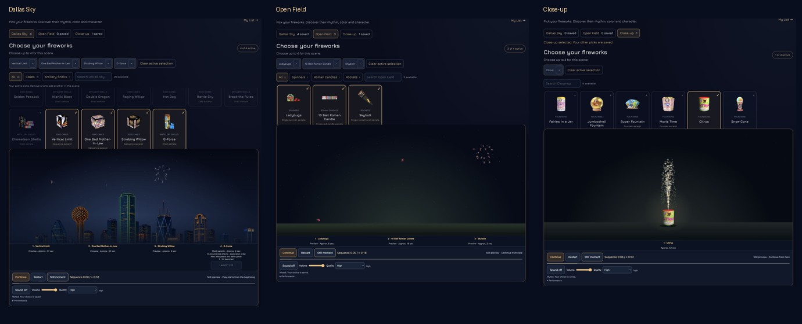

35 profiles: 10 complete sequences, 11 excerpts and 14 samples. New: Vertical Limit, One Bad Mother-In-Law, Strobing Willow and twelve G-Force shell effects. Native visual review deferred at the user's request.

Menu and visible stage captures combined from two scroll positions; no simulated effects were added to the screenshots.
Real UI capture at approximately 3.5 frames/second, original timing, silent. Shows pause/resume and additional launches after the automatic sequences. This recording is not an engine frame-rate measurement.
Chrome desktop, DPR 2, 1280 × 640 Canvas. Three new cakes and G-Force: 59.62 fps Auto and 60.02 fps High. Four shell banks: 60 fps, peak 1,588 drawn points. These desktop measurements do not validate native performance or physical audio output.
Full measurements